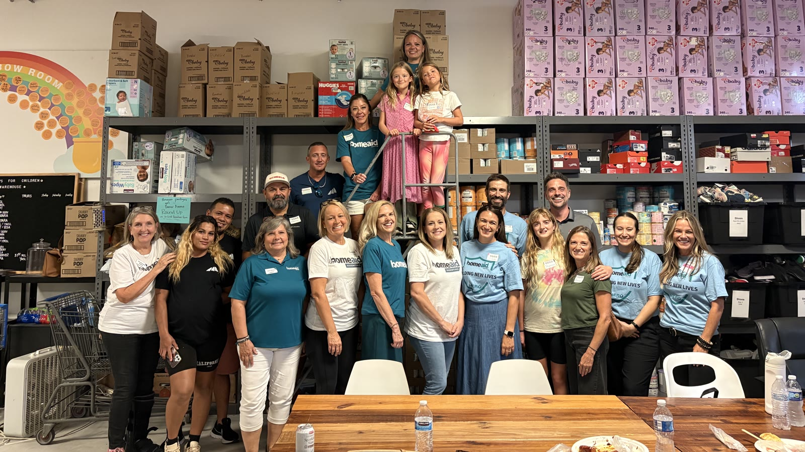
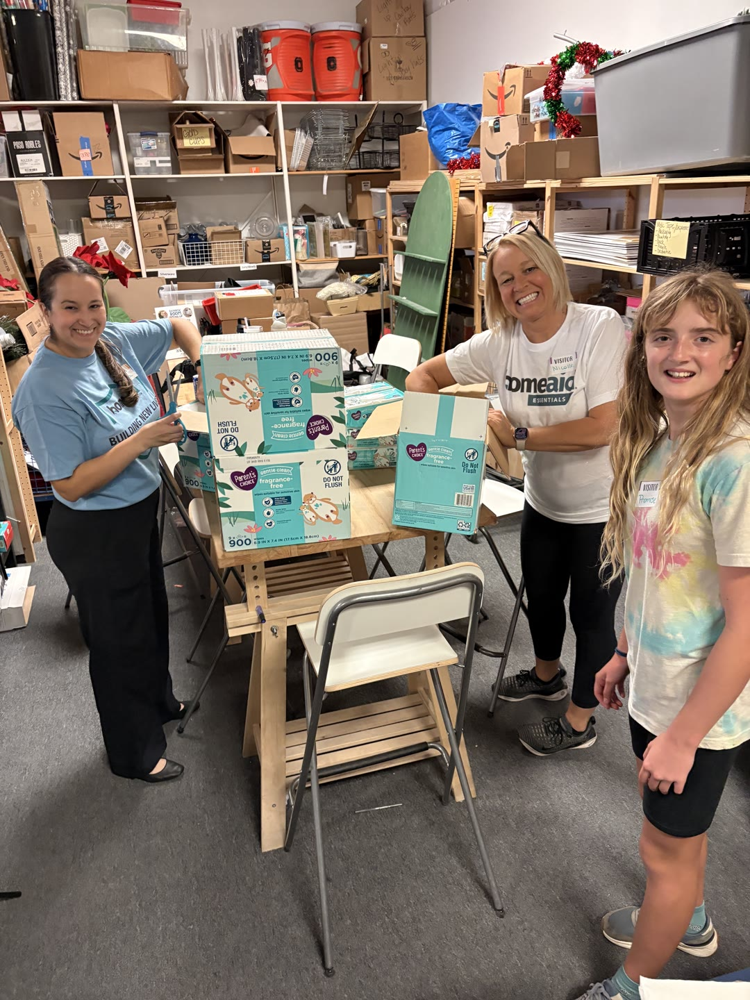
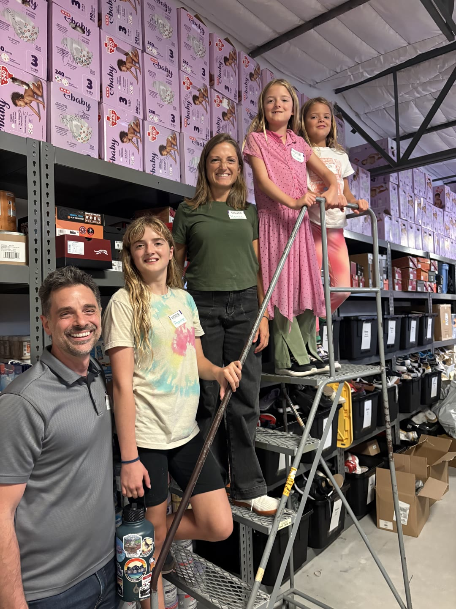
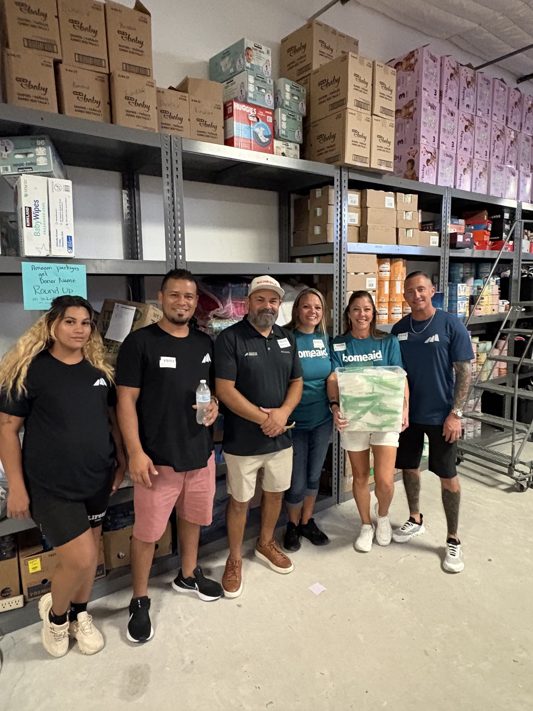
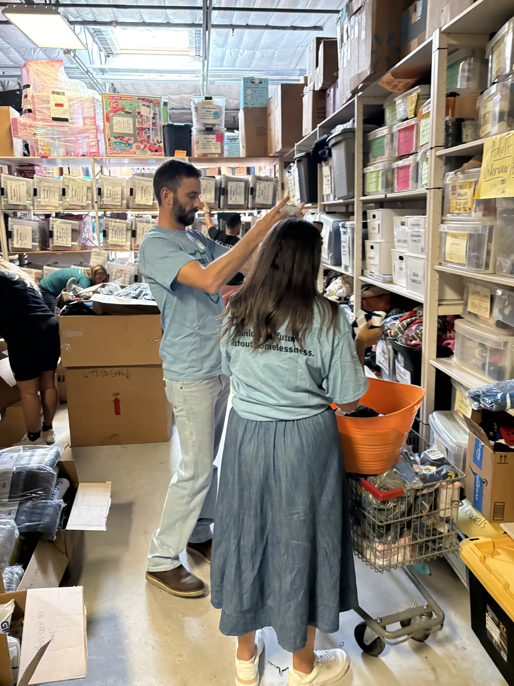

Community · Ongoing Partnership
Serving families facing homelessness across Austin

Giving back is a core part of who we are at Freccia. Our partnership with HomeAid Austin, an organization dedicated to helping individuals and families experiencing homelessness, runs deeper than any single project.
In 2026, co-owner Rebekah Severi joined HomeAid Austin's Fund Development Committee. Beyond the boardroom, our team shows up for the work itself: a Public Care Day with the Society of St. Vincent de Paul, and a Volunteer Day with HomeAid and Braeburn assembling care kits for four Austin nonprofits, including the Sunrise Navigation Center, whose facilities we recently remodeled.
In September 2026, we joined HomeAid Austin's second annual Committee Care Day in support of Partnerships for Children, an organization that serves more than 10,000 children each year. The day was hands-on: bundling wipes, inventorying blankets, coats and clothing, and stocking bins so families and caseworkers can quickly find exactly what they need.
From the 2025 HomeAid Austin Gala to serve days on the ground, this is a partnership we are proud of, and one we plan to keep showing up for.
Learn how to get involved at homeaidaustin.org.




In Partnership With
HomeAid Austin · Partnerships for Children · Society of St. Vincent de Paul · Braeburn · Sunrise Navigation Center